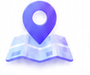
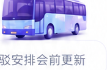

交通接驳

大会目的地
大湾区大学（松山湖校区）
导航前往
到场方式
▣
公共交通
推荐绿色出行
›
▰
自驾
按导航前往目的地
›
ⓘ 具体到场指引以大会最新通知为准。
大会接驳

●
起点
接驳安排会前更新
●
终点
接驳安排会前更新
◷
发车时间
具体班次待发布
↑
上车点
接驳安排会前更新
↓
下车点
接驳安排会前更新
ⓘ 大会接驳安排会前更新，敬请关注。
临时通知
●
班次调整
如有调整及时通知
›
●
站点调整
如有调整及时通知
›